Backrooms Studio · Live di recensione su TikTok
Overlay live
Come installare l'overlay sul PC fisso, collegarlo a TikTok LIVE Studio e usare la regia durante la diretta: tabellone dei voti, classifica Top 5, countdown di 3 ore e vincitore.
In breve
Le cose da ricordare quando la guida è già stata seguita una volta.
Avvio
Doppio clic su AVVIA.cmd nella cartella overlay-live. Si apre una finestra nera: lasciala aperta per tutta la live (puoi ridurla a icona).
Tasti della regia
- F2
- Apri / chiudi il voto della chat
- F4
- Conferma il punteggio
- F8
- Prossima traccia
- F9
- Pausa / riprendi il countdown
Regia (Chrome o Edge)
http://127.0.0.1:4747/regiaSorgente Link in LIVE Studio
http://127.0.0.1:4747/overlay.htmlLive giornaliere senza premio
http://127.0.0.1:4747/senza-premio.htmlNella regia, in alto: In onda → Senza premio. Vedi Live senza premio.
Live session in studio
http://127.0.0.1:4747/studio.htmlNella regia, in alto: In onda → Live session in studio. Nessun suono. Vedi Live session in studio.
Battle (scontri tra due rapper)
http://127.0.0.1:4747/battle.htmlNella regia, in alto: In onda → Battle. Vedi Battle.
Drum Challenge Live (sfida alla batteria)
http://127.0.0.1:4747/drum.htmlNella regia, in alto: In onda → Drum Challenge Live. I Like sbloccano i brani. Vedi Drum Challenge Live.
Studio Production (webcam e DAW)
http://127.0.0.1:4747/produzione.htmlNella regia, in alto: In onda → Studio Production. Nessun suono. Vedi Studio Production.
Back Rooms Podcast (anche orizzontale)
http://127.0.0.1:4747/podcast.htmlOrizzontale: podcast.html?formato=orizzontale. Nella regia, in alto: In onda → Back Rooms Podcast; F2 e F3 cambiano tematica, F4 mostra o nasconde il pannello. Vedi Back Rooms Podcast.
Reaction Release (anche orizzontale)
http://127.0.0.1:4747/reaction.htmlOrizzontale: reaction.html?formato=orizzontale. Nella regia, in alto: In onda → Reaction Release. Vedi Reaction Release.
Giudici: Daniele Beat, Plugghe Voce, Freya Mix. La chat vale come un quarto giudice (25%). Account TikTok: @backrooms.studios.
Una volta solaPrima volta sul PC fisso
Circa 15 minuti. Serve internet. Alla fine avrai l'overlay dentro TikTok LIVE Studio con dei dati di prova.
1. Porta la cartella sul PC fisso
-
Copia il file overlay-live.zip (o la cartella
overlay-live) sul PC fisso con una chiavetta USB, Google Drive o OneDrive. -
Se l'hai scaricato da internet (Drive, mail, WeTransfer): clic destro sullo zip → Proprietà → in basso spunta Annulla blocco → OK. Evita gli avvisi di Windows al primo avvio. Se la casella non c'è, va bene così.
-
Clic destro sullo zip → Estrai tutto… → scegli la cartella Documenti → Estrai. Alla fine devi avere
Documenti\overlay-livecon dentroAVVIA.cmd,GUIDA.htmle le cartellelibepublic.
2. Installa Node.js
È il programma che fa girare l'overlay. Si installa una volta sola.
Apri nodejs.org e scarica la versione LTS per Windows (il file che finisce in
.msi).Aprilo e premi Next fino alla fine lasciando tutto com'è. Se compare la casella Automatically install the necessary tools, lasciala vuota.
-
Per controllare: menu Start → scrivi PowerShell → apri Windows PowerShell → scrivi questo e premi Invio:
node -vDeve rispondere con un numero come
v24.11.0. Va bene qualunque versione da 22 in su.
3. Primo avvio
Apri
Documenti\overlay-livee fai doppio clic su AVVIA.cmd.Se compare Windows ha protetto il PC: Ulteriori informazioni → Esegui comunque.
-
La prima volta scrive Prima installazione… e scarica le librerie (1–2 minuti). Poi deve comparire questo:
Overlay live pronto Regia: http://127.0.0.1:4747/regia Overlay: http://127.0.0.1:4747/overlay.html (sorgente Link in TikTok LIVE Studio, 1080x1920) Senza premio: http://127.0.0.1:4747/senza-premio.html (live giornaliere di ascolto, 1080x1920) Nero.fan: manca nero.segreto in config.json, i webhook verranno rifiutati. Webhook Nero.fan in ascolto su http://127.0.0.1:4748/webhook/nero
La riga su Nero.fan è normale finché non imposti la coda automatica.
Lascia la finestra aperta. Se la chiudi, l'overlay si ferma.
Comodo: clic destro su AVVIA.cmd → Mostra altre opzioni → Invia a → Desktop (crea collegamento). Dalle prossime volte lo avvii dal Desktop.
4. Apri la regia e carica i dati di prova
-
Apri Chrome o Edge e vai su:
http://127.0.0.1:4747/regiaIn alto a sinistra deve esserci Connesso. Aggiungila ai preferiti.
In fondo a destra premi Carica dati demo → OK. Compaiono una traccia con i voti, una classifica e una coda finte.
In alto a destra premi Anteprima gara ↗: vedi l'overlay come lo vedranno gli spettatori, su sfondo scuro.
5. Aggiungi l'overlay in TikTok LIVE Studio
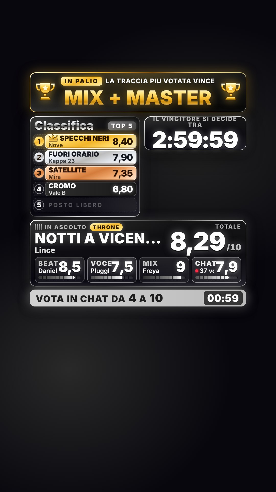
Apri TikTok LIVE Studio con l'account @backrooms.studios. In alto a sinistra, sotto Vista mobile, deve essere selezionata l'icona del telefono (verticale).
Sotto la lista delle sorgenti, a sinistra, premi Aggiungi fonte e scegli Link.
-
Come indirizzo incolla:
http://127.0.0.1:4747/overlay.htmlDeve finire con .html: senza, LIVE Studio risponde «Inserisci l'URL corretto». Se chiede le dimensioni: larghezza 1080, altezza 1920.
Allarga la sorgente finché copre tutto lo schermo verticale, dagli angoli fino ai bordi. Non spostarla e non ridimensionarla a mano: i riquadri sono già al loro posto.
Se avevi aggiunto una sorgente per ogni riquadro (classifica, timer, tabellone), toglile: adesso basta questa.
Trascinala in cima alla lista delle sorgenti, così sta sopra la camera.
Dall'alto: il premio in palio bello grande, sotto la classifica a sinistra e il countdown a destra, in basso il tabellone e, quando si vota, la barra verde «Vota in chat». Le posizioni sono quelle dello screenshot della vostra diretta.
Sui telefoni TikTok riempie lo schermo in altezza e taglia un pezzo a destra e a sinistra (circa 100 pixel per lato su 1080). Per questo tutto sta un po' più dentro dei bordi. Per controllare: apri http://127.0.0.1:4747/overlay?anteprima=1&guide=1. Le strisce rosse sono i lati tagliati, i riquadri gialli le zone coperte dall'app.
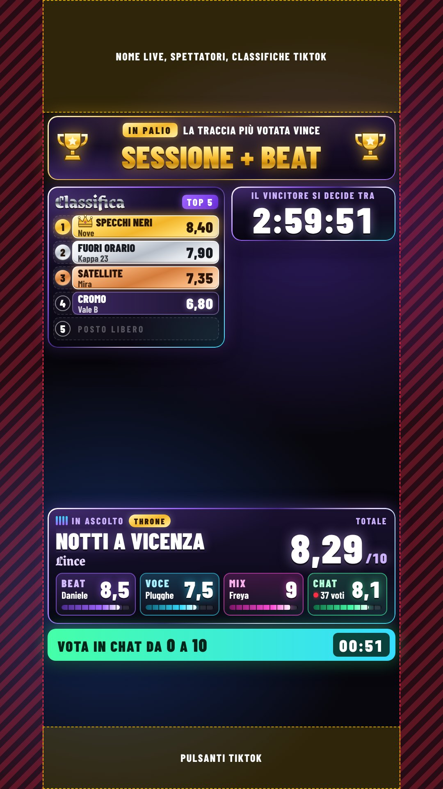
?guide=1: niente deve finire nelle zone colorate.Questa parte non è ancora stata provata dentro LIVE Studio. Lo sfondo dell'overlay deve essere trasparente: vedi la camera e sopra i riquadri. Se invece vedi uno sfondo nero o la sorgente resta vuota, guarda Se qualcosa non va.
Diretta orizzontale: usa http://127.0.0.1:4747/overlay.html?formato=orizzontale con dimensioni 1920 × 1080.
6. Togli i dati di prova
Nella regia premi Nuova serata → OK. Classifica, coda e countdown si svuotano. Premio, giudici e account TikTok restano.
5 minutiPrima di ogni live
Doppio clic su AVVIA.cmd (o sul collegamento nel Desktop). Aspetta Overlay live pronto.
Apri la regia:
http://127.0.0.1:4747/regia.Premi Nuova serata → OK per ripartire da zero.
AttenzioneNuova serata cancella la classifica della volta prima. Fallo solo all'inizio di una live, mai durante.
In Serata 11 scrivi il premio di stasera e premi Salva premio: compare in grande in cima all'overlay. Sotto il premio girano le frasi di Salva frasi, separate da
|: usatele per dire a chi entra come partecipare. Di partenza: «La traccia più votata vince» e «Manda la tua traccia su nero.fan/backrooms» (l'indirizzo resta minuscolo ed evidenziato in oro). Controlla i nomi dei giudici. L'account @backrooms.studios è già impostato.In Suoni 10 premi un pulsante di Prova e controlla che il suono esca in diretta (vedi Effetti sonori).
Su nero.fan avvia la sessione live di backrooms. Entro un minuto, in alto nella regia 1 compare Nero in ascolto e la traccia in riproduzione va sul tabellone. Prima c'è Nero in attesa: è normale, riprova da solo.
Apri TikTok LIVE Studio, controlla che si veda l'overlay e vai in diretta.
Entro un minuto dall'inizio della live, in alto nella regia 1 compare TikTok in ascolto. Prima della diretta c'è TikTok in attesa: è normale, riprova da solo ogni minuto.
Quando inizia la gara: in Countdown 8 lascia 180 minuti e premi Avvia. Partono le 3 ore.
Durante la liveIl giro di ogni traccia
La regia la usa una persona sola. I numeri gialli sono le zone della regia nell'immagine.
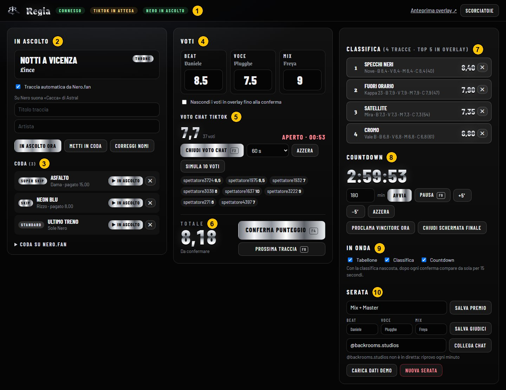
- 1 Stato del server e della chat TikTok
- 2 Traccia in ascolto
- 3 Coda (e coda pubblica di Nero.fan)
- 4 Voti dei giudici
- 5 Voto della chat
- 6 Totale, Conferma, Prossima
- 7 Classifica completa
- 8 Countdown e vincitore
- 9 Riquadri visibili in onda
- 10 Effetti sonori
- 11 Premio, frasi sotto il premio, giudici, account TikTok
- 12 Layout senza premio delle live giornaliere (vedi Live senza premio)
- 13 In onda: gara con premio o senza premio
-
La traccia arriva da sola da Nero.fan. Quando su Nero parte una traccia, titolo, artista e tipo (Skip, Super Skip, Throne) vanno da soli sul tabellone e nell'overlay, in 3 secondi. Serve la spunta Traccia automatica da Nero.fan in 2 e la sessione live aperta su Nero: in alto nella regia 1 c'è Nero in ascolto.
Solo se Nero non è collegato, a mano:
- Se è nella Coda 3, premi ▶ In ascolto accanto. Le submission pagate su Nero arrivano lì da sole, se hai attivato la coda automatica, già in ordine: Throne, Super Skip, Skip, Standard.
- Altrimenti scrivi Titolo traccia e Artista in 2 e premi In ascolto ora.
- Per leggere i nomi delle submission gratuite apri Coda su Nero.fan in fondo a 3. Con Metti in coda le aggiungi alla coda della regia.
Facoltativo, per la suspense: spunta Nascondi i voti in overlay fino alla conferma in 4. Gli spettatori vedono «?» finché non confermi.
-
Scrivi i voti dei giudici in 4: Beat (Daniele), Voce (Plugghe), Mix (Freya). Da 0 a 10, anche mezzi punti come
7.5. Con Invio passi alla casella successiva. I voti compaiono subito in overlay. -
Apri il voto della chat con F2 (o Apri voto chat in 5). Sotto il tabellone compare la barra verde «Vota in chat da 0 a 10» con il tempo che scorre. Ditelo anche a voce in diretta.
- Valgono i commenti con solo il voto:
8,7.5,7,5,9/10,!voto 8. «Bella, 8» non vale. - Un voto a persona: se uno scrive due volte, vale l'ultimo.
- Si chiude da solo dopo 60 secondi (la durata si cambia dal menu accanto). Per chiuderlo prima premi di nuovo F2.
- Nella regia vedi la media, quanti hanno votato e gli ultimi voti arrivati.
- Valgono i commenti con solo il voto:
-
Conferma con F4 (o Conferma punteggio in 6). Il totale è la media di Beat, Voce, Mix e Chat, ognuno al 25%. Se in chat non vota nessuno, è la media dei tre giudici.
Il totale conta per un secondo e mezzo e si «timbra», poi la classifica si muove. A destra, sotto il countdown, compare una notifica: «Nuova entrata», «Sale al 2° posto» oppure, in oro, «Nuovo primo posto!». I primi tre hanno la casella oro, argento e bronzo; il primo ha la corona accanto al titolo. Nella regia leggi per esempio «Confermato: 2° in classifica».
-
Passa alla prossima traccia su Nero. Il tabellone cambia da solo.
- Se su Nero la traccia nuova parte mentre state ancora votando, non cancella i voti: aspetta. Nella regia compare il riquadro «Su Nero ora suona…». Confermate con F4: 10 secondi dopo, il tempo di mostrare punteggio e classifica, arriva da sola. Con F8 (o Passa ora) arriva subito.
- Se avete già confermato da più di 10 secondi, la traccia nuova arriva subito.
- Senza Nero collegato: F8 svuota il tabellone e ricominci dal punto 1.
Se sbagli
- Voto sbagliato, non ancora confermato: riscrivilo nella casella.
- Voto sbagliato dopo la conferma (prima di F8): riscrivilo e premi di nuovo F4. Aggiorna la stessa riga della classifica, non ne crea una nuova.
- Nome sbagliato: clic sul titolo in 2, correggi i campi e premi Correggi nomi. I voti restano. Se la traccia era già confermata, premi di nuovo F4.
- Traccia da togliere dalla classifica: premi ✕ accanto in 7.
- Se provi a cambiare traccia con voti non confermati, la regia chiede prima conferma.
Allo scadere delle 3 oreFine gara e vincitore
- Quando il countdown arriva a zero, l'overlay mostra da solo la schermata del vincitore con il premio.
- Se in testa ci sono due o più tracce a pari punti, l'overlay mostra lo Spareggio e nella regia compare il riquadro Spareggio in cima alla colonna destra. Decidete voi tre, poi premi Proclama accanto alla traccia scelta.
- Per chiudere la gara prima: Proclama vincitore ora in 8.
- Per tornare all'overlay normale: Chiudi schermata finale.
Countdown
- F9 o Pausa lo ferma, di nuovo F9 lo fa ripartire.
- +5′ e −5′ aggiungono o tolgono 5 minuti. Azzera lo spegne.
- Negli ultimi 30 minuti il countdown diventa rosso e lampeggia, con una sirena. Nell'ultimo minuto lampeggia più veloce; negli ultimi 10 secondi c'è un tic al secondo.
- Se il PC si riavvia durante la live, il countdown riprende dal punto giusto.
In onda
In 9 togli la spunta per nascondere premio, tabellone, classifica o countdown. Con la classifica nascosta, dopo ogni conferma compare da sola per 15 secondi.
Per tenere viva la liveEffetti sonori
Ogni momento ha il suo suono: nuova traccia, voto di un giudice (più alto il voto, più alta la nota), apertura e chiusura del voto chat, un «pop» leggero per i voti della chat, calcolo del punteggio con colpo finale, nuova entrata, scalata, uscita dalla top, fanfara per il nuovo primo posto, sirena degli ultimi 30 minuti, tic finali, rullo di tamburi per il vincitore, battito per lo spareggio.
Si regolano in Suoni 10:
- Suonano nell'overlay (LIVE Studio): escono dalla sorgente Link, come la grafica. È la scelta di partenza.
- Suonano in questa pagina: escono dalla regia. Serve se in diretta i suoni dell'overlay non si sentono: in LIVE Studio aggiungi l'audio del PC (audio di sistema) e tieni la regia aperta. Fai un clic nella regia, altrimenti il browser non fa partire l'audio.
- Spenti: nessun suono.
- Volume: vale per tutti gli effetti. Teneteli sotto la musica: devono accompagnare, non coprire la traccia.
- I pulsanti di Prova fanno suonare un effetto dove è impostato. Le anteprime della regia (Anteprima gara ↗, Anteprima senza premio ↗ e quella piccola nella sezione Senza premio) sono mute apposta, così non si sentono doppi.
- Suona solo il layout scelto in In onda 13: se in LIVE Studio avete caricato sia la gara sia il layout senza premio, non partono suoni doppi.
Non sappiamo ancora se la sorgente Link di LIVE Studio manda in diretta l'audio della pagina. Premi Prova → Primo posto e ascolta da un telefono collegato alla live. Se non si sente, passa a «in questa pagina».
Dopo la live
Chiudi la finestra nera con la X. Classifica e voti restano salvati nel file dati\stato.json: alla prossima live riaprila e premi Nuova serata.
Live giornaliereLayout senza premio
Per le live in cui ascoltate la musica delle persone senza regalare nulla. Niente premio, voti, classifica né countdown: in alto il banner che spiega come mandarvi la musica, sotto la camera una barra che scorre con tutti i vostri social, e una scheda «Ora in ascolto» che sale quando su Nero parte una traccia.
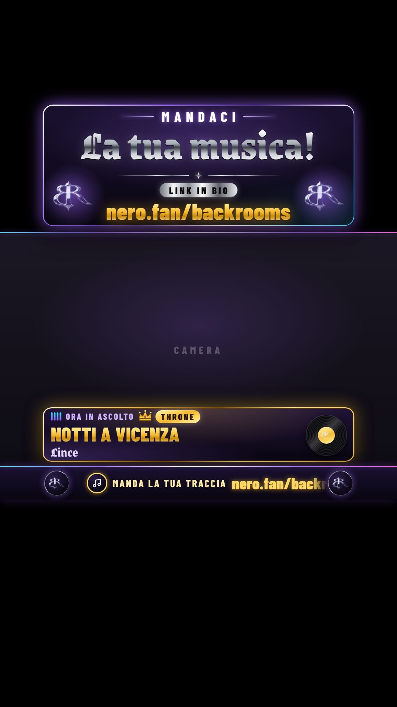
Una volta sola: la scena in LIVE Studio
Apri la scena delle live giornaliere e togli il vecchio banner «Mandaci la tua musica», la scritta «qui scrivi social e tutto che scorre» e i loghi BR: li rifà l'overlay, con i vostri colori e le animazioni.
Aggiungi fonte → Link e incolla:
http://127.0.0.1:4747/senza-premio.htmlLarghezza 1080, altezza 1920. Allargala su tutta la tela e trascinala in cima alla lista delle sorgenti, come per la gara.
Per controllare le posizioni:
http://127.0.0.1:4747/senza-premio.html?anteprima=1&guide=1. Il riquadro azzurro è la camera, quello bianco la zona dove sui telefoni escono i commenti.
A ogni live giornaliera
Avvia AVVIA.cmd e apri la regia, come sempre.
In alto nella regia, in In onda 13, scegli Senza premio. Serve per due cose: suona solo questo layout, e la traccia di Nero passa subito, senza aspettare voti.
Avvia la sessione live su nero.fan. Ogni traccia che parte su Nero sale nella scheda «Ora in ascolto», con un suono leggero che non copre la musica, e passa anche nella barra.
Non serve Nuova serata: il conto «Oggi abbiamo ascoltato N tracce» (nella barra da 3 tracce in su) riparte da solo quando tra una traccia e l'altra passano più di 4 ore, cioè alla live del giorno dopo.
Durante la live: tre pulsanti
Sono in cima alla sezione Senza premio 12:
- Richiamo link (con il banner in onda): il banner diventa d'oro, i loghi girano e nero.fan/backrooms pulsa, con una campanella. Usatelo quando dite a voce «mandateci la vostra musica» o quando entra tanta gente. Ogni 5 minuti lo fa anche da solo, senza suono.
- Spot studio: per 10 secondi sale la scheda «Vuoi suonare così? · Registrazione, mix e master · backroomsstudio.it». Il momento giusto è quando una traccia è bella ma suonerebbe meglio con un mix fatto bene: è lì che chi ascolta pensa a voi.
- Ripeti scheda: rimostra la traccia in ascolto, senza suono (per chi è appena entrato).
Cosa si cambia dalla regia
- Banner: le quattro righe («Mandaci», «La tua musica!», «Link in bio», il link) e il richiamo automatico.
- Barra che scorre (nella scheda Social del brand, in alto nella regia: è la stessa lista per tutti i layout con la barra): una riga per voce, nell'ordine in cui passano. Spunta = in onda (massimo 8), icona, etichetta (es. Seguici) e testo (es. @backrooms.studios). Le frecce cambiano l'ordine, ✕ toglie, + Aggiungi voce aggiunge (per esempio YouTube o Spotify quando li aprirete). Si salva da solo quando esci dal campo. Sotto: la velocità (80 di partenza; sopra 120 si legge peggio) e gli interruttori.
- Scheda «Ora in ascolto»: quanti secondi resta per ogni tipo di invio. Di partenza gratis 8, Skip 10, Super Skip 12, Throne 15: chi paga si vede di più (Skip con bordo cromato, Super Skip magenta, Throne tutto d'oro con la corona). È quello che gli spettatori vedono comprando un invio veloce. Con Prova scheda vedete come appare ognuno.
- Suono quando parte una traccia: delicato (consigliato), pieno come nella gara, oppure nessuno.
- Spot studio: le tre righe dello spot.
- In onda: banner, barra e scheda si possono nascondere uno per uno.
A destra c'è un'anteprima piccola, muta, che si aggiorna dal vivo.
Guardate una live da un telefono. I commenti escono in basso a sinistra e possono coprire l'inizio della barra e della scheda. La scheda arriva appena sotto il mento di chi parla: se vi sedete più in basso, diteci e la alziamo o la accorciamo.
Sessioni di registrazioneLive session in studio
Per le live in cui un artista registra in studio. Lo schermo è diviso in tre: in alto il fonico, al centro l'artista, in basso lo schermo di FL Studio. Tra fonico e artista c'è la targa 3D con il nome e l'Instagram dell'artista, che compilate voi. Tra artista e DAW passa la barra con i vostri social, da cui ogni tanto sale una comparsa («Vieni a trovarci in studio», «Scrivici in DM per prenotare una sessione»). Nessun effetto sonoro, per non disturbare chi registra.
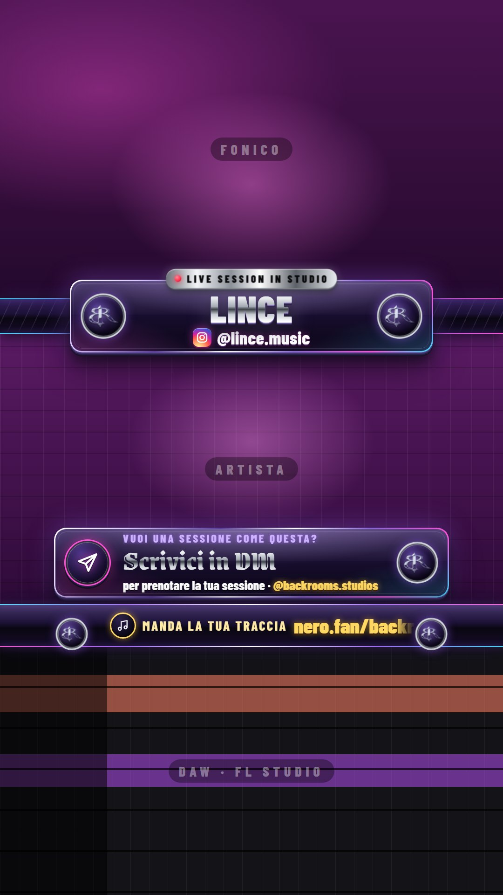
Una volta sola: la scena in LIVE Studio
Fate una scena nuova con le tre camere, una sotto l'altra: fonico da 0 a 640 px, artista da 716 a 1296, schermo della DAW da 1388 a 1920. Il fonico va inquadrato nella metà bassa del suo riquadro, perché in alto l'app di TikTok copre fino a circa 270 px.
Aggiungi fonte → Link e incolla:
http://127.0.0.1:4747/studio.htmlLarghezza 1080, altezza 1920. Allargatela su tutta la tela e mettetela in cima alla lista delle sorgenti, sopra le tre camere.
Per controllare le posizioni:
http://127.0.0.1:4747/studio.html?anteprima=1&guide=1. I tre riquadri azzurri sono le camere.
A ogni sessione
Nella regia, in alto, in In onda scegliete Live session in studio. Da quel momento non suona più niente: né gli overlay né la regia.
Nella sezione Live session in studio (in fondo alla regia) scrivete Nome dell'artista e Instagram e premete Manda in onda. La targa gira su se stessa e mostra il nome nuovo. Per l'Instagram va bene @nome, nome o il link del profilo copiato dall'app.
A fine sessione premete Svuota: la targa resta in onda con la scritta «Live session in studio».
Comparse
- Salgono da sole a giro, una ogni 4 minuti, e restano 10 secondi. Si cambia in Da sole e Restano su; «spente» vuol dire che salgono solo quando le chiedete voi.
- Mostra la prossima fa salire la prossima del giro; ▶ accanto a una comparsa fa salire proprio quella. Lo fa anche lo Stream Deck:
POST /api/comparsa. - I testi si cambiano nell'elenco: icona, titolo (in gotico, fino a 28 caratteri), riga sopra e riga sotto. Gli indirizzi e gli account (backroomsstudio.it, @backrooms.studios) escono in oro. La spunta decide se una comparsa è nel giro automatico. Si salva da solo quando uscite dal campo.
Barra dei social
È la stessa barra delle live senza premio, con gli stessi social: si cambiano nella scheda Social del brand, in alto nella regia. Qui scegliete solo la velocità e se far passare anche «In studio ora: nome · @instagram». In In onda si nascondono targa, barra e comparse una per una.
Guardate la live da un telefono. La targa copre circa 40 px in fondo alla camera del fonico e 40 px in cima a quella dell'artista: inquadrate l'artista con un po' di spazio sopra la testa. Le comparse coprono per 10 secondi la parte bassa della camera dell'artista. Se serve spostare qualcosa, i numeri sono in cima a public/css/studio.css.
Scontri tra due rapperBattle
Due rapper uno contro l'altro. In alto le barre della vita (stile Tekken) seguono i voti della chat, la camera sta al centro e un fulmine la divide a metà con il VS. Sopra ci sono modalità e timer, sotto i tre giudici (Luca, Freya, Daniele) e la barra «Vota in chat». Si può accendere il tabellone del torneo o della classifica a punti. Ogni tanto compare un pop-up con Back Rooms («Prenota la tua sessione») e Rime Vicentine.
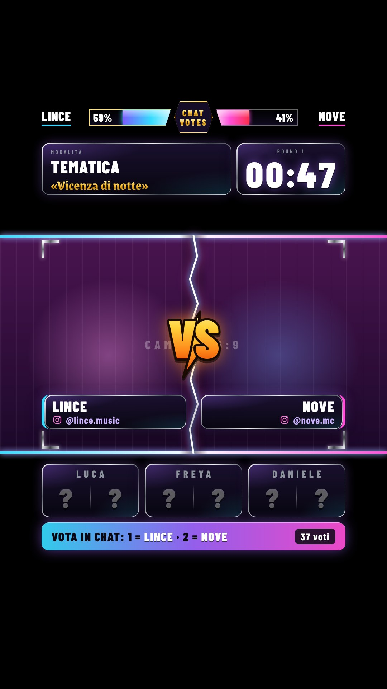
Una volta sola: la scena in LIVE Studio
Mettete la camera sotto, a tutta larghezza e al centro della tela (16:9, da 656 a 1264 px).
Aggiungi fonte → Link e incolla:
http://127.0.0.1:4747/battle.htmlLarghezza 1080, altezza 1920, stesa su tutta la tela e in cima alle sorgenti.
Per controllare le posizioni:
http://127.0.0.1:4747/battle.html?anteprima=1&guide=1. Se la vostra camera è 4:3, cambiate--bt-y-camerae--bt-h-camerain cima apublic/css/battle.css.
Un round, passo per passo
Nella regia, in In onda, scegliete Battle. Nella sezione Battle scrivete nome e Instagram dei due rapper e premete Applica nomi. Scegliete la modalità (Tematica e Situazione hanno uno slot per il tema) e la durata.
Avvia (F2): 3-2-1 a tutto schermo, gong, fulmine e VS. La chat vota dal primo secondo scrivendo 1 o sx per il rapper a sinistra e 2 o dx per quello a destra (un voto a testa, vale l'ultimo).
Negli ultimi 30 secondi il timer diventa rosso e lampeggia; a zero suona il gong. Pausa (F9) lo ferma, Termina chiude subito.
Scrivete i sei voti dei giudici (da 0 a 10, Invio passa al campo dopo) e premete Rivela (F4): i voti compaiono uno alla volta, poi la chat e il totale. Totale = media di Luca, Freya, Daniele e chat (25% ciascuno).
Finiti i voti, il vincitore esce a tutta pagina: rullo di tamburo, poi il nome in oro, il voto totale (la media di Luca, Freya, Daniele e chat) che sale da 0 e i quattro voti sotto. Resta in onda 11 secondi e si ritira da sola. Con la finale del torneo il titolo diventa «Il campione del torneo è». Rivedi vincitore la rifà; si spegne dalle spunte In onda → Schermata vincitore.
Con un pari merito la schermata aspetta: la regia decide con Vince … e il vincitore esce subito. Poi Prossimo scontro (F8): i nomi si svuotano (con il torneo si caricano da soli) e la schermata si chiude.
Tabellone
- Torneo: scrivete 4 o 8 nomi, uno per riga, e premete Crea il torneo (Sorteggia li mescola). Quarti, semifinali e finale: chi vince avanza da solo.
- Classifica a punti: scrivete gli artisti e il target (default 30). A ogni round i totali dei due rapper si sommano ai loro punti; vince il primo che arriva al target.
- Mostra il tabellone lo mette sopra a tutto; si spegne da solo quando parte il round dopo.
Pop-up e suoni
- I pop-up escono ogni 4 minuti per 10 secondi, mai durante il round e senza suono. L'Instagram di Rime Vicentine va scritto da voi nella riga sotto del pop-up.
- Suonano gong, 3-2-1, schiocco del fulmine, sirena a 30 secondi, tic negli ultimi 10 e i voti dei giudici, dalla pagina del battle (come per la gara). Si provano in Suoni.
Guardate la live da un telefono. I giudici e la barra della chat stanno nella zona dei commenti di TikTok: se la chat è molto attiva, i commenti coprono la parte sinistra dei box. Provate un round intero con i dati di prova prima di andare in onda.
Sfida alla batteriaDrum Challenge Live
Per le live in cui suonate la batteria e la chat vi aiuta con i Like. A destra c'è una colonna di traguardi: ogni volta che i Like della live arrivano a una tappa si sblocca un brano da suonare, con un'animazione e un suono. In alto a sinistra c'è il brano che state suonando e, sotto, il riquadro «Dona un…», che invita a fare un regalo per saltare la coda. In basso un equalizzatore si muove con l'audio di FL Studio e la cornice lampeggia a ogni colpo di batteria.
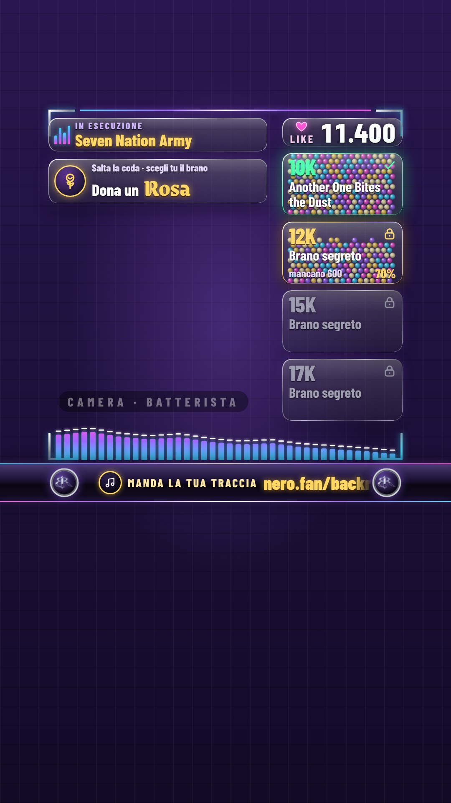
Una volta sola: la scena in LIVE Studio
Mettete la camera del batterista sotto, a tutto schermo.
Aggiungi fonte → Link e incolla:
http://127.0.0.1:4747/drum.htmlLarghezza 1080, altezza 1920, stesa su tutta la tela e in cima alle sorgenti.
Per controllare le posizioni:
http://127.0.0.1:4747/drum.html?anteprima=1&guide=1. Niente deve finire nelle zone colorate: in alto l'app di TikTok, in basso la chat.
Prima di ogni live
Nella regia, in alto, in In onda scegliete Drum Challenge Live: compare la sezione del Drum.
Scaletta: una riga per tappa, «Like | Titolo del brano» (i Like si scrivono anche 15.000 o 15k). Di partenza ci sono 37 tappe, da 1.000 a 500.000 Like, senza titoli: finché una tappa è chiusa la colonna scrive «Brano segreto», sbloccata senza titolo diventa «Brano a sorpresa». Premete Salva scaletta; se qualcosa non va, il messaggio dice il numero della riga e non cambia niente.
Like: collegate la chat (sezione Serata → Collega chat): i Like arrivano da soli e sotto il contatore grande compare «Collegato a TikTok». Se avviate la regia a live già iniziata, scrivete il numero giusto in Imposta i Like; Riparti da ora li azzera e riporta la scaletta alla prima tappa.
Dona un…, Artista ospite (compare nella barra dei social) e Riempimento dei moduli (perline o sabbia) si cambiano a piacere. In Dimensione dei testi ogni gruppo di testi si ingrandisce o rimpicciolisce.
Equalizzatore: leggete il paragrafo qui sotto prima della prima diretta.
Durante la live
- Sblocco: quando i Like raggiungono una tappa il modulo prende un colpo, compare «Brano sbloccato» con il titolo, la colonna scorre e parte un suono. Se i Like saltano più tappe in una volta, si annuncia solo l'ultima. Per provarlo senza live scrivete in Imposta i Like un numero appena sotto una tappa (per esempio 11900) e premete +100.
- Brano in esecuzione: quando attaccate un brano sbloccato premete Suona ora accanto alla sua tappa nell'elenco della scaletta (oppure scrivete titolo e artista e premete Mostra). Togli il brano fa sparire il riquadro.
- Richiamo (F2): il riquadro «Dona un…» pulsa per attirare l'attenzione; lo fa anche da solo ogni 20 secondi.
- Se i Like sono sbagliati (live partita prima della regia, conteggio di TikTok che salta) correggete con Imposta, +100 o +1.000. Cambiare i Like o la scaletta non fa ripartire gli sblocchi delle tappe già superate.
L'equalizzatore: far arrivare l'audio di FL Studio
La pagina del Drum non sente niente da sola: è la regia che ascolta l'audio e manda i livelli alla pagina. Quindi la regia deve restare aperta per tutta la diretta, sul PC con FL Studio, da http://localhost:4747/regia con Chrome o Edge: il browser permette l'ascolto solo da localhost (dal tablet, con l'indirizzo che contiene l'IP del PC, non funziona).
Nella sezione Equalizzatore scegliete la Sorgente: Ingresso audio (un cavo audio virtuale, «Mix stereo» o l'ingresso di ritorno della scheda audio che porta il suono di FL Studio: lo scegliete in Ingresso) oppure Audio del PC (il browser condivide l'audio del computer: scegliete «Intero schermo» e spuntate «Condividi audio di sistema»).
Premete Avvia ascolto e fate partire un brano in FL Studio: la barra del livello si muove, le barre in pagina si alzano e la cornice lampeggia a ogni colpo. Senza audio le barre «respirano» piano (si spegne con Mostra anche senza segnale).
Sensibilità (50–300%) e Stile (barre o onda specchiata) si regolano al volo. Prova (4 s) manda uno schema finto di 4 secondi, per vedere l'equalizzatore senza audio.
Se FL Studio usa un driver ASIO in modalità esclusiva, nessun altro programma riceve il suo audio, nemmeno il browser. Passate FL Studio a un driver condiviso (WASAPI o FL Studio ASIO) oppure mandate l'audio a un cavo audio virtuale e sceglietelo come Ingresso audio.
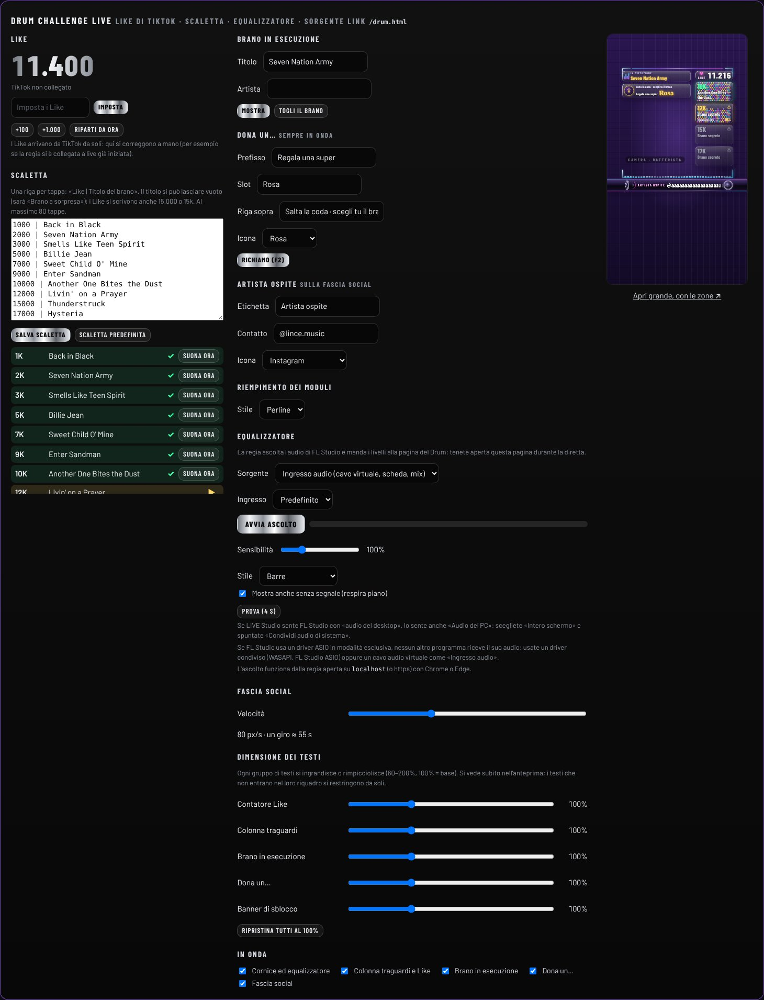
L'«Audio del PC» e i driver ASIO non si sono potuti provare mentre il layout veniva costruito (le prove usano un ingresso audio finto): provateli una volta con FL Studio vero, con Prova (4 s) e con un brano. Anche i Like sono stati provati solo simulati: guardate una live vera con la chat collegata. Guardate poi la live da un telefono: i pulsanti di TikTok e la chat non devono coprire l'equalizzatore.
Lavoro in studioStudio Production
Per le live in cui fate un beat o un mix: la webcam in alto, lo schermo di FL Studio in basso e in mezzo la barra dei social. Nella parte alta della webcam c'è una targa 3D con il titolo della live: scegliete un preset (Cooking Beats, Sessione Beat, Mix & Master) e cambiate le righe mentre scrivete. Nessun effetto sonoro.
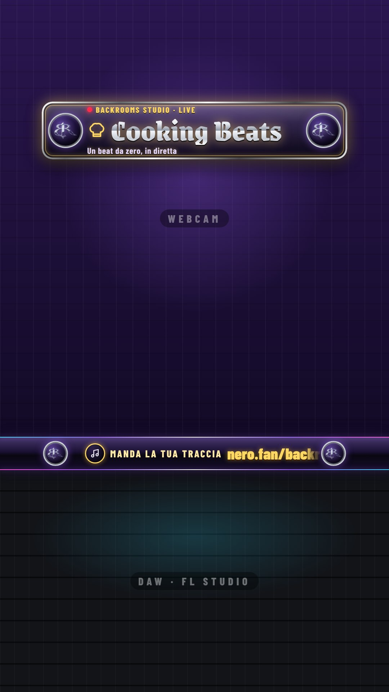
Una volta sola: la scena in LIVE Studio
Fate una scena con le due camere una sotto l'altra: webcam da 0 a 1212 px e schermo di FL Studio da 1304 a 1920 px (in mezzo c'è la barra dei social). La targa sta tra 282 e 442 px: inquadrate la persona un po' più in basso.
Aggiungi fonte → Link e incolla:
http://127.0.0.1:4747/produzione.htmlLarghezza 1080, altezza 1920, stesa su tutta la tela e in cima alle sorgenti, sopra le due camere.
Per controllare le posizioni:
http://127.0.0.1:4747/produzione.html?anteprima=1&guide=1.
A ogni live
Nella regia, in alto, in In onda scegliete Studio Production.
Nella sezione Studio Production premete un preset: riempie le tre righe della targa e ne sceglie il colore (Cooking Beats oro, Sessione Beat magenta, Mix & Master ciano). Il preset in onda è quello evidenziato.
Cambiate le righe a piacere: Riga sopra (fino a 32 caratteri), Titolo (28) e Riga sotto (48). Vanno in onda mentre scrivete, un attimo dopo l'ultimo tasto, con un breve effetto «flip». Il titolo non può restare vuoto: mentre lo riscrivete resta in onda quello di prima; un testo troppo lungo dà un avviso e il campo torna al testo in onda.
In In onda si nascondono la targa e la barra dei social; in Dimensione dei testi si ingrandiscono o rimpiccioliscono le tre righe.
Guardate la live da un telefono: la targa sta in alto, appena sotto il nome della live di TikTok. Se la testa di chi parla finisce dietro la targa, abbassate l'inquadratura o spostate la targa: i numeri sono in cima a public/css/doppio.css.
PodcastBack Rooms Podcast
Per il podcast sul divano: la camera a tutto schermo con sopra una targa («Back Rooms Podcast» e il numero della puntata), una linea di divisione tra le due persone («intervista doppia») e un pannello con le tematiche della puntata, che si accendono e si spengono a comando. In fondo c'è la barra dei social, con gli ospiti. Funziona in verticale (TikTok) e in orizzontale. Nessun effetto sonoro.
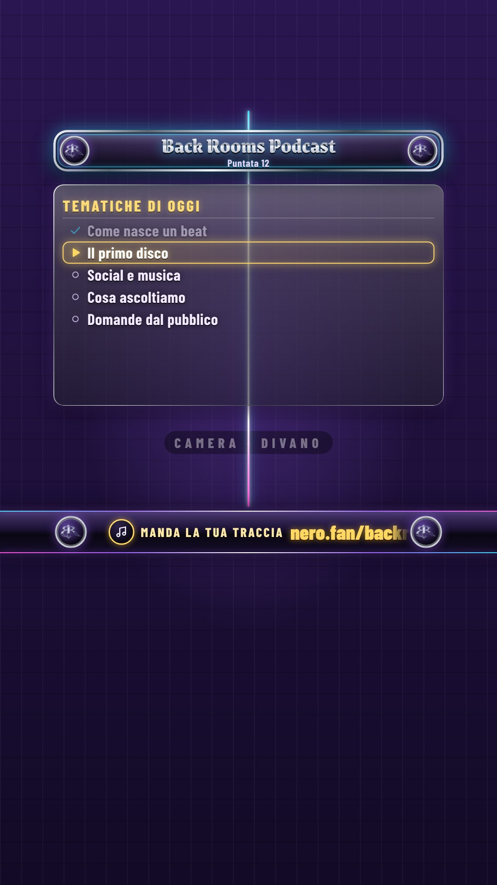
Una volta sola: la scena in LIVE Studio
Mettete la camera del divano sotto, a tutto schermo.
Aggiungi fonte → Link e incolla, per la diretta verticale:
http://127.0.0.1:4747/podcast.htmlLarghezza 1080, altezza 1920. Per una diretta orizzontale usate invece questo, 1920 × 1080:
http://127.0.0.1:4747/podcast.html?formato=orizzontaleIn tutti e due i casi stesa su tutta la tela e in cima alle sorgenti.
Per controllare le posizioni (solo verticale):
http://127.0.0.1:4747/podcast.html?anteprima=1&guide=1.
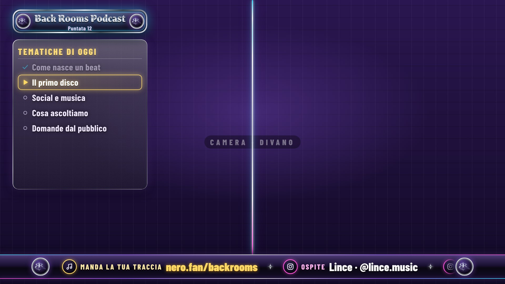
A ogni puntata
Nella regia, in alto, in In onda scegliete Back Rooms Podcast.
Titolo: «Back Rooms Podcast» (fino a 32 caratteri) e la riga dell'episodio (fino a 48, per esempio «Puntata 12»). Vanno in onda mentre scrivete.
Ospiti: + Aggiungi ospite, poi nome, contatto e icona. Compaiono nella barra dei social come «Ospite · Nome · @contatto». Si salvano appena uscite dal campo; una riga senza nome non va in onda; ✕ toglie l'ospite. Al massimo 4.
Tematiche: in Elenco delle tematiche scrivete il titolo del pannello e le tematiche, una per riga (al massimo 8, da 48 caratteri), e premete Salva tematiche. Finché non salvate, quello che avete scritto resta com'è.
Durante la puntata: i quattro moduli
In cima alla sezione ci sono quattro grandi pulsanti On/Off, verdi quando sono in onda: un clic accende, il secondo spegne. All'inizio sono accesi solo la targa e la fascia social.
- Linea di divisione: si disegna dal centro verso l'alto e il basso in meno di un secondo. È l'effetto «intervista doppia»: accendetela quando volete separare le due persone.
- Pannello Tematiche: entra con una dissolvenza che scorre. La tematica in onda ha il bordo oro e la freccia, quelle già fatte sono attenuate con la spunta.
- Targa e Fascia social: si nascondono e si rimostrano.
Per cambiare tematica: F2 passa alla successiva, F3 torna indietro, F4 mostra o nasconde il pannello (valgono solo con il Podcast in onda). Oppure, nella lista Tematiche in onda, un clic su una voce la mette in onda (anche tornando indietro); ci sono anche i pulsanti Indietro e Avanti. Il bordo oro scorre da una voce all'altra. In orizzontale Pannello a sceglie se sta a sinistra o a destra; in verticale sta sempre al centro. Dallo Stream Deck: POST /api/podcastTematica con { "avanti": true } o { "indietro": true }.
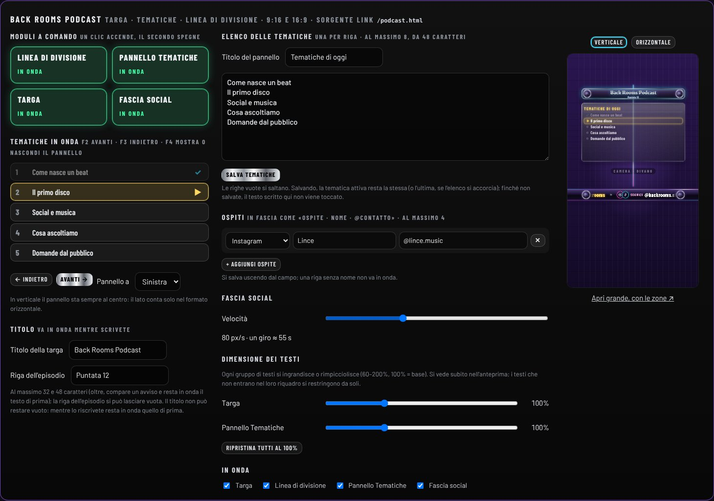
Nuova serata (nella sezione Serata) riporta la tematica in onda alla prima; elenco, ospiti e titolo restano.
Guardate la live da un telefono. In verticale il pannello Tematiche sta al centro e copre una parte della camera (la linea passa dietro il vetro): se vi disturba, tenetelo acceso solo quando serve, con F4. Il vetro non sfoca la camera: è scuro e semitrasparente.
ReactionReaction Release
Per le reaction: la webcam di chi commenta e lo schermo condiviso con il video, con la targa «REACTION RELEASE DELLA SETTIMANA» e la barra dei social. In verticale stanno uno sopra l'altro, come in Studio Production. In orizzontale stanno affiancati dentro due finestre con la cornice cromata, su uno sfondo di marca. Nessun effetto sonoro.
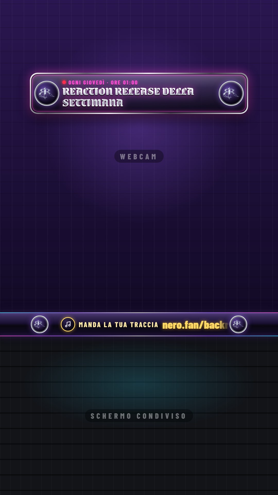
Una volta sola: la scena verticale in LIVE Studio
Le due camere una sotto l'altra: webcam da 0 a 1212 px e schermo condiviso da 1304 a 1920 px (in mezzo la barra dei social).
Aggiungi fonte → Link e incolla:
http://127.0.0.1:4747/reaction.htmlLarghezza 1080, altezza 1920, stesa su tutta la tela e in cima alle sorgenti.
Per controllare le posizioni:
http://127.0.0.1:4747/reaction.html?anteprima=1&guide=1.
La scena orizzontale
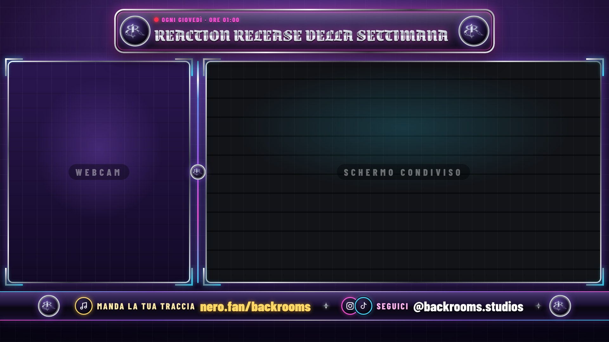
Mettete le due camere sotto, ognuna nel suo foro: la webcam (verticale, 576 × 702 px) a sinistra, da x 24 a 600 e da y 192 a 894; lo schermo condiviso (1248 × 702 px) a destra, da x 648 a 1896, stessa altezza.
Aggiungi fonte → Link e incolla:
http://127.0.0.1:4747/reaction.html?formato=orizzontaleLarghezza 1920, altezza 1080, stesa su tutta la tela e in cima. Fuori dalle due finestre la pagina è opaca (sfondo viola di marca): le camere si vedono solo dai due fori.
A ogni live
Nella regia, in alto, in In onda scegliete Reaction Release. Con il selettore Verticale / Orizzontale sopra l'anteprima vedete le due versioni.
Il titolo di partenza è «REACTION RELEASE DELLA SETTIMANA» con sopra «Ogni giovedì · ore 01:00». Cambiate le tre righe a piacere: Riga sopra (fino a 40 caratteri), Titolo (60) e Riga sotto (60, può restare vuota). Vanno in onda mentre scrivete. Ripristina titolo predefinito rimette quello di partenza.
In In onda si nascondono la targa e la barra dei social; in Dimensione dei testi si ingrandiscono o rimpiccioliscono le tre righe.
Provate la scena orizzontale con le camere vere: se la webcam o lo schermo non riempiono bene il loro foro, adattate l'inquadratura nella sorgente (i fori sono rettangoli fissi). Se volete cambiarli, i numeri sono in public/css/doppio.css (vanno cambiati in due punti, lo dice il commento).
Facoltativo, si può fare dopoCoda automatica da Nero.fan
Senza questa parte funziona tutto: la traccia che suona su Nero va già da sola sul tabellone. Con questa parte, in più, ogni «Skip the line» pagato compare nella Coda 3 appena viene pagato, con il tipo e l'importo, prima ancora che suoni.
Nero manda un avviso a un indirizzo internet. Il programma gratuito ngrok fa arrivare quell'avviso al PC fisso.
Una volta sola
Crea un account gratuito su ngrok.com. Nella dashboard copia il tuo Authtoken e, nella sezione Domains, il dominio gratuito (finisce in
.ngrok-free.app).-
Sul PC fisso apri PowerShell e scrivi, uno alla volta (al posto di
IL-TUO-TOKENincolla l'Authtoken):winget install ngrok.ngrokngrok config add-authtoken IL-TUO-TOKEN -
Su Nero.fan: Settings → Developer → Stream triggers. Come URL metti il tuo dominio seguito da
/webhook/nero:https://IL-TUO-DOMINIO.ngrok-free.app/webhook/neroNero ti mostra un signing secret: copialo.
-
In
overlay-liveclic destro su config.json → Apri con → Blocco note. Nella parte"nero"incolla il secret tra le virgolette di"segreto":"segreto": "IL-SIGNING-SECRET"Salva, chiudi la finestra nera e riapri AVVIA.cmd. Il file
config.jsoncompare dopo il primo avvio.
A ogni live
Insieme ad AVVIA.cmd, apri PowerShell e lascia aperto anche questo:
ngrok http 4748 --url=IL-TUO-DOMINIO.ngrok-free.appNon è ancora stato provato con un avviso vero di Nero. Su Nero premi Send test event: se nella Coda della regia compare una traccia, funziona. Nella finestra nera leggi Nero.fan: in coda …. Se invece leggi firma non valida, il secret in config.json non è quello giusto.
ngrok apre verso internet solo la porta degli avvisi di Nero. La regia resta visibile solo dal PC fisso.
FacoltativoRegia da tablet o portatile
Di base la regia si apre solo sul PC fisso. Per usarla da un altro dispositivo collegato allo stesso Wi-Fi:
-
Apri config.json con Blocco note e cambia queste due righe (scegli tu le cifre del PIN):
"host": "0.0.0.0", "pinRegia": "4827", Salva e riapri AVVIA.cmd. Se Windows chiede il permesso per il firewall, premi Consenti (reti private).
-
Trova l'indirizzo del PC fisso: in PowerShell scrivi
ipconfige leggi la riga Indirizzo IPv4, per esempio
192.168.1.20. Sull'altro dispositivo apri
http://192.168.1.20:4747/regiacon il tuo indirizzo. Al primo comando chiede il PIN.
LIVE Studio continua a usare http://127.0.0.1:4747/overlay.html. I tasti F2, F4, F8 e F9 funzionano solo con una tastiera.
Se qualcosa non va
- La finestra nera dice che «node» o «npm» non è riconosciuto
- Node.js non è installato, o la finestra era aperta durante l'installazione. Installa Node (passo 2), poi riapri AVVIA.cmd.
- La finestra nera scrive EADDRINUSE e si ferma
- L'overlay è già acceso in un'altra finestra. Chiudi tutte le finestre nere e apri AVVIA.cmd una volta sola.
- In alto nella regia c'è «Offline»
- La finestra nera è stata chiusa. Riapri AVVIA.cmd: la regia si ricollega da sola e ritrovi classifica, coda e countdown.
- LIVE Studio dice «Inserisci l'URL corretto» o che il link non è valido
- L'indirizzo deve finire con .html:
http://127.0.0.1:4747/overlay.html. LIVE Studio scarta gli indirizzi senza un punto seguito da lettere, come/overlayolocalhost. Poi prova ad aprirlo: la finestra nera deve essere aperta sullo stesso PC. Usa Aggiungi fonte → Link, non «Link di streaming», che vuole un video. - In LIVE Studio l'overlay non si vede
- Controlla che la finestra nera sia aperta e che l'indirizzo della sorgente sia esattamente
http://127.0.0.1:4747/overlay.html. Con una serata vuota si vede poco: premi Carica dati demo per provare, poi Nuova serata. Se in Chromehttp://127.0.0.1:4747/overlay?anteprima=1funziona, togli la sorgente da LIVE Studio e aggiungila di nuovo. - In LIVE Studio l'overlay ha lo sfondo nero e copre la camera
- Non dovrebbe succedere, ed è la parte non ancora provata. Fai una foto dello schermo e chiedi a Claude come spiegato qui sotto.
- Manca un riquadro in overlay
- Controlla le spunte in In onda 9. Se è rimasta la schermata del vincitore, premi Chiudi schermata finale.
- La traccia di Nero non arriva sul tabellone
- Guarda in alto nella regia 1. Con Nero in attesa, passa il mouse sopra per leggere il motivo: «Nessuna sessione live su Nero» vuol dire che su nero.fan la sessione live non è avviata. Controlla anche la spunta Traccia automatica da Nero.fan in 2. Se c'è il riquadro «Su Nero ora suona…», la traccia nuova aspetta la conferma dei voti con F4 (oppure premi Passa ora).
- In diretta non si sentono gli effetti sonori
- In Suoni 10 controlla che non siano spenti e che il volume non sia a zero. Se sono impostati «nell'overlay», passa a «in questa pagina», aggiungi in LIVE Studio l'audio del PC e fai un clic nella regia. Prova con Prova → Primo posto.
- Un riquadro è tagliato sul telefono o finisce sotto i pulsanti di TikTok
- Apri
http://127.0.0.1:4747/overlay?anteprima=1&guide=1e confronta con l'anteprima di LIVE Studio. Le posizioni sono numeri in pixel in cima al filepublic/css/overlay.css: chiedi a Claude di spostarle, allegando uno screenshot dell'anteprima. - Siamo in diretta ma la regia dice «TikTok in attesa»
- Aspetta un paio di minuti: riprova ogni minuto. Controlla in Serata 11 che l'account sia @backrooms.studios, con la «s» finale, e premi Collega chat. Se leggi «Nessuna live trovata», il nome dell'account è sbagliato.
- La chat scrive i voti ma non vengono contati
- Il voto della chat deve essere aperto: in 5 deve esserci Aperto. Il commento deve contenere solo il voto.
- La lettura della chat TikTok smette di funzionare
- Si appoggia alla chat pubblica di TikTok, che ogni tanto cambia. Nel frattempo la gara va avanti con i soli voti dei giudici: conferma con F4 senza aprire il voto della chat.
- Il PC si è riavviato durante la live
- Riapri AVVIA.cmd e la regia: classifica, coda, voti e countdown sono salvati.
Chiedere aiuto a Claude sul PC fisso
Le conversazioni con Claude restano sul computer dove sono state fatte, per questo dal fisso non vedi quella in cui è nato l'overlay. Puoi aprirne una nuova lì:
Apri Claude sul PC fisso e, nella scheda Code, scegli la cartella
Documenti\overlay-live.-
Scrivi una cosa così, poi descrivi il problema o allega una foto dello schermo:
Leggi GUIDA.html e README.md in questa cartella: è l'overlay delle nostre live TikTok.
Questa guida è anche nel file GUIDA.html dentro la cartella: doppio clic e si apre nel browser, anche senza internet.
Overlay live Backrooms · aggiornata il 6 ottobre 2026